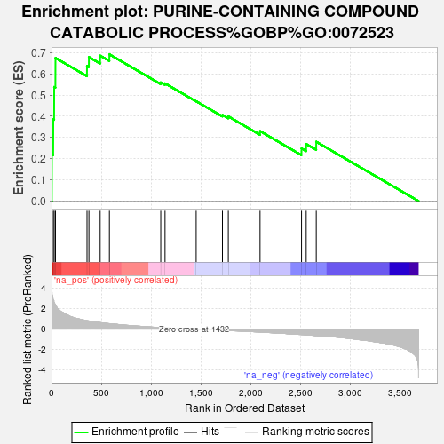
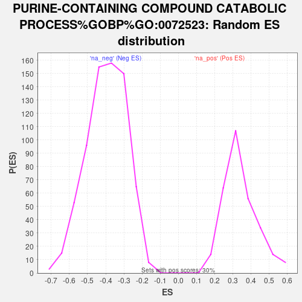

| | | Dataset | TNBC_vs_Healthy_ranks |
| Phenotype | NoPhenotypeAvailable |
| Upregulated in class | na_pos |
| GeneSet | PURINE-CONTAINING COMPOUND CATABOLIC PROCESS%GOBP%GO:0072523 |
| Enrichment Score (ES) | 0.69196373 |
| Normalized Enrichment Score (NES) | 2.0225866 |
| Nominal p-value | 0.0 |
| FDR q-value | 0.02720088 |
| FWER p-Value | 0.165 |
Table: GSEA Results Summary

Fig 1: Enrichment plot: PURINE-CONTAINING COMPOUND CATABOLIC PROCESS%GOBP%GO:0072523
Profile of the Running ES Score & Positions of GeneSet Members on the Rank Ordered List
| SYMBOL | RANK IN GENE LIST | RANK METRIC SCORE | RUNNING ES | CORE ENRICHMENT | | 1 | HK3 | 4 | 3.742 | 0.2206 | Yes |
| 2 | PKM | 18 | 2.845 | 0.3857 | Yes |
| 3 | ENPP4 | 27 | 2.611 | 0.5382 | Yes |
| 4 | HK2 | 40 | 2.368 | 0.6752 | Yes |
| 5 | HK1 | 357 | 0.815 | 0.6375 | Yes |
| 6 | PGAM1 | 376 | 0.788 | 0.6793 | Yes |
| 7 | SUCLG1 | 489 | 0.627 | 0.6859 | Yes |
| 8 | SUCLA2 | 582 | 0.525 | 0.6920 | Yes |
| 9 | NUDT4 | 1098 | 0.133 | 0.5596 | No |
| 10 | NUDT15 | 1141 | 0.116 | 0.5551 | No |
| 11 | HPRT1 | 1454 | -0.012 | 0.4708 | No |
| 12 | FOXK2 | 1718 | -0.117 | 0.4061 | No |
| 13 | NUDT3 | 1777 | -0.150 | 0.3992 | No |
| 14 | NUDT1 | 2096 | -0.294 | 0.3301 | No |
| 15 | HINT1 | 2513 | -0.534 | 0.2485 | No |
| 16 | PFKM | 2560 | -0.561 | 0.2692 | No |
| 17 | ALDOC | 2661 | -0.640 | 0.2799 | No |
Table: GSEA details [plain text format]

Fig 2: PURINE-CONTAINING COMPOUND CATABOLIC PROCESS%GOBP%GO:0072523: Random ES distribution
Gene set null distribution of ES for PURINE-CONTAINING COMPOUND CATABOLIC PROCESS%GOBP%GO:0072523